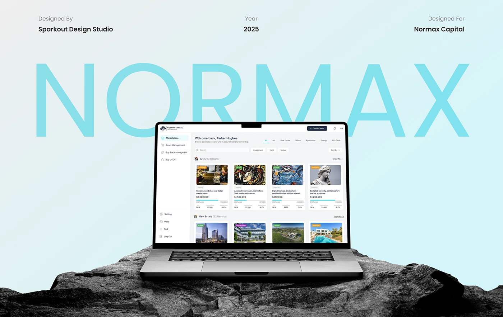
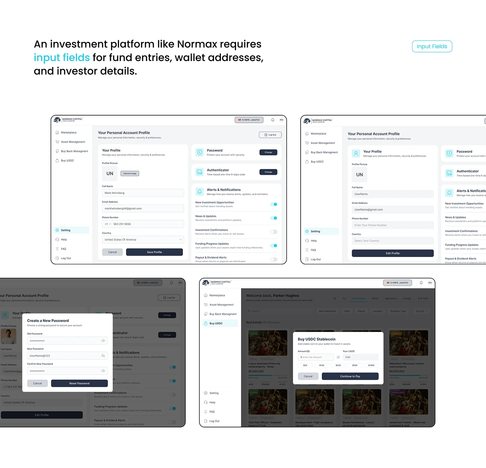
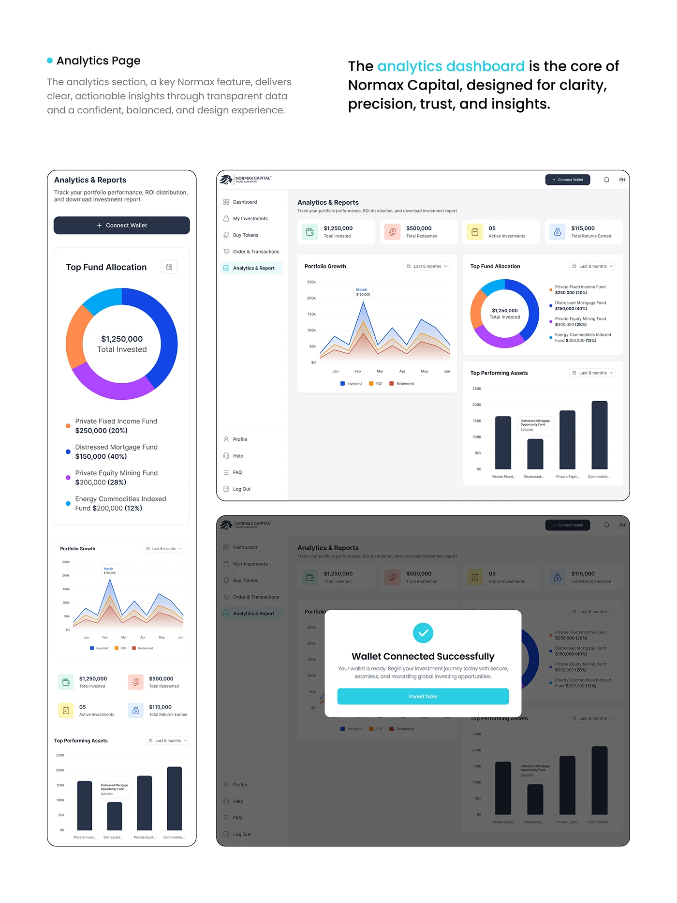

The product
Normax enables investors to explore fractional ownership opportunities across art, real estate, mining, agriculture, energy and emerging technology.
Normax Capital UX/UI Case Study
A responsive investment platform that helps people discover, evaluate and manage tokenised real-world assets with confidence.

01 / Overview
The product
Normax enables investors to explore fractional ownership opportunities across art, real estate, mining, agriculture, energy and emerging technology.
The challenge
Make tokenised asset investing feel as clear and familiar as a traditional investment product without hiding its financial or compliance complexity.
Design question How might we turn KYC, wallets, USDC and token ownership into one understandable investor journey?
02 / Strategy
The experience was structured around three principles that connect discovery, investment and ownership.
Use a consistent information hierarchy for category, value, funding progress, term, yield and status.
Turn KYC, wallet connection and USDC funding into explicit steps with clear system feedback.
Bring holdings, returns, transactions, yield and buyback status into one coherent portfolio view.
03 / Product Experience
The interface uses calm hierarchy, restrained colour and consistent states to make financial decisions easier to scan.
01
Account creation, authentication and KYC are presented as one continuous path. Each screen explains what is required and what happens next.
02
Category-led browsing and a reusable asset hierarchy let investors scan very different opportunities through the same decision framework.
03
Portfolio summaries, owned assets and performance information turn token ownership into a familiar financial dashboard.
04
Profile, wallet and USDC flows show balances, confirmations and next actions clearly across desktop and mobile contexts.
04 / Process
The process kept product scope, investor intent and interface behaviour aligned before visual polish.
Translate business requirements into investor and system needs.
Map features, navigation and the complete investment flow.
Create responsive screens and reusable interface patterns.
Review hierarchy, edge cases and transaction feedback.
Document states, components and responsive behaviour.

05 / Outcome
The final design connects asset discovery, compliance, funding, ownership and exit in one responsive product language.

Explore more work
Back to Selected Work